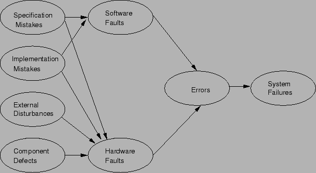

Next: แนวทางการออกแบบระบบที่ทนทานต่อการเสียหาย
Up: พื้นฐานระบบที่คงทนต่อความเสียหาย
Previous: ความเสียหาย, ความผิดพลาด, และความล้มเหลวของระบบ
Contents
Index
ความเสียหายอาจมีสาเหตุหลายหลากที่เกิดขึ้นกับอุปกรณ์อิเล็กทรอนิกส์, กับอุปกรณ์ภายนอก, หรือในระหว่างกระบวนการออกแบบ จึงเป็นสิ่งสำคัญที่จะเข้าใจที่มาของความเสียหาย ซึ่งจะได้แจกแจงดังต่อไปนี้
กระบวนการออกแบบมักเริ่มจากการวางกรอบของปัญหาคร่าวๆ จากนั้นผู้ออกแบบเริ่มทำการกำหนดปัญหาตามความเข้าใจของตนเอง เมื่อได้กำหนดปัญหา แนวทางการแก้ปัญหาจะถูกร่างขึ้น และเริ่มการสร้างวิธีการแก้ปัญหา และกำหนดสถาปัตยกรรมของการแก้ปัญหานั้นๆ ข้อกำหนดทางด้านฮาร์ดแวร์ และซอฟต์แวร์ก็จะถูกกำหนดขึ้นจากวิธีการแก้ปัญหา และสถาปัตยกรรมที่สร้างขึ้น จากนั้นจะเข้าสู่กระบวนการออกแบบทางด้านฮาร์ดแวร์ และ ซอฟต์แวร์
เมื่อระบบฮาร์ดแวร์ และ ซอฟต์แวร์เสร็จสมบูรณ์ ผู้ออกแบบจะต้องส่งมอบระบบที่สามารถใช้งานได้ พร้อมขั้นตอนการทดสอบ โดยหวังว่าระบบที่ออกแบบจะสามารถแก้ปัญหาที่กำหนดไว้ได้ กระบวนการออกแบบอาจถูกวนซ้ำหลายรอบเพื่อลดความผิดพลาด และแก้ปัญหาให้ดียิ่งขึ้น
ปัญหาอาจเกิดได้ในหลายขั้นตอนของกระบวนการออกแบบ ซึ่งสามารถส่งผลเสียหายขึ้นในระบบ สาเหตุของความเสียหายอาจแบ่งได้เป็นปัญหาที่เกิดขึ้นในสี่ที่มา คือข้อกำหนด (Specifications), การสร้างและการติดตั้ง (Implementation), ตัวอุปกรณ์ (Components), และผลกระทบภายนอก (External Factors)
สาเหตุแรกที่อาจก่อให้เกิดความเสียหายได้แก่ความผิดพลาดในการกำหนดข้อกำหนด ซึ่งรวมถึงข้อกำหนดของวิธีการแก้ปัญหา, ข้อกำหนดของสถาปัตยกรรม, ข้อกำหนดของฮาร์ดแวร์ และซอฟต์แวร์ สาเหตุที่สองได้แก่ ความเสียหายที่เกิดจากการสร้างและการติดตั้ง, ซึ่งเป็นขั้นตอนของการแปลงข้อกำหนดให้เป็นฮาร์ดแวร์ และซอฟต์แวร์ที่สามารถใช้งานได้จริง. ความผิดพลาดสามารถเกิดได้จากหลายสาเหตุ เช่น ออกแบบไม่มีคุณภาพ, เลือกอุปกรณ์และส่วนประกอบไม่เหมาะสม, สร้างไม่ดี, หรือเขียนโปรแกรมผิด
สาเหตุต่อมาได้แก่ ความเสียหายเนื่องจากความไม่สมบูรณ์ของอุปกรณ์ ซึ่งอาจเกิดจากขั้นตอนการผลิต, ตัวอุปกรณ์เสียเองแบบสุ่ม หรือการเสื่อมสภาพตามเวลา
ความเสียหายเนื่องจากความไม่สมบูรณ์ของอุปกรณ์ เป็นสาเหตุของความเสียหายที่เราจะพิจารณา อย่างไรก็ตามสาเหตุจากความไม่สมบูรณ์ของอุปกรณ์นี้เป็นเพียงสาเหตุของความเสียหายหนึ่งในหลายสาเหตุ
สาเหตุสุดท้ายได้แก่ผลกระทบจากภายนอก เช่น ผลกระทบจากการแผ่รังสี, อุณหภูมิ, การรบกวนจากคลื่นแม่เหล็กไฟฟ้า, การใช้งานที่ผิด, สภาพแวดล้อมที่ไม่เอื้อต่อการใช้งาน หรือถูกทำลายจากภายนอก ระบบอิเล็กทรอนิกส์อาจทำงานในสภาพที่มีการเปลี่ยนแปลงของอุณหภูมิในช่วงกว้าง รูป 9.6 แสดงสาเหตุของความเสียหาย ที่กล่าวมาขั้นต้น
Figure 9.6:
สาเหตุของความเสียหายที่มาจาก ข้อกำหนด (Specifications), การสร้างและการติดตั้ง (Implementation), ตัวอุปกรณ์ (Components),
และผลกระทบภายนอก (External Factors)
|

|
Vara Varavithya
2002-03-09